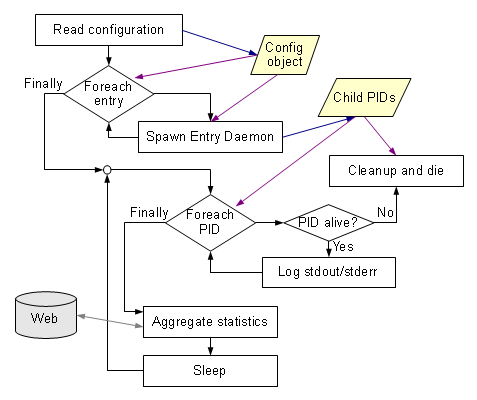

Glidein Frontend
Frontend Design Internals
Program flow
The main tasks of the Frontend Daemon (glideinFrontend.py) are the startup the Group Programs (glideinFrontendElement.py) and the aggregation of statistics from the entries. See picture below for an overview.
The only non trivial operation is the statistics aggregation. The Frontend Daemon reads the XML files produced by the Frontend Group Daemons, aggregates them, and writes out an aggregate XML file. It also updates the RRD files used to keep the history and creates the rrdtool graphs and HTML pages for human consumption.
The Frontend Group Program (glideinFrontendElement.py) is invoked to process the requests and statistics for a Group (e.g. a VO or a set of schedds sharing the same Glideins) and then it ends. There is no infinite loop. It is invoked also to cleanup the ClassAd of the Group (e.g. if the Frontend is terminating). The glideinFrontendElement queries the Factory to know the available entries, the load and the status of previous requests. It queries also the Schedds to know the job requests. And also the WMS collector to know number and types of available Glideins. Stats are updated. The jobs are clustered (autoclustering) and matched with the Entries that can run them. Running jobs are also matched with the Glideins (Entries) that are running them.